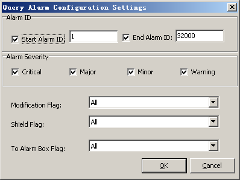
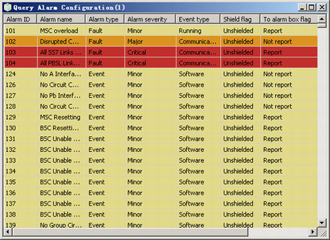

This describes how to query alarm configuration, set alarm severity, set alarm shield flag, set the flag for reporting the alarm to the alarm box, configure environment alarm, and restore alarm configuration.
Prerequisites
- The LMT runs normally.
- The communication between the LMT and the BSC is normal.
Procedure
- Through GUI
- Choose . A dialog box is displayed, as shown in Figure 1.
Figure 1 Query Alarm Configuration Settings dialog box
- Set Start alarm ID and End alarm ID in the Alarm ID area. Set relevant parameters in the Alarm Severity area, and set Modification Flag, Shield Flag and To Alarm Box Flag.
- Click OK. A dialog box is displayed, as shown in Figure 2.
Figure 2 Querying alarm configuration
- Right-click an alarm shown in Figure 2 to perform the following operations:
- Choose to requery the alarm configuration.
- Choose to set the severity of the alarm. The severity of the alarm is changed when the alarm is reported to the alarm box.
- Choose to set the alarm shield flag. A board does not report the alarm whose shield flags is set to Shield to the network manager or the alarm box. The server does not save the logs of the alarm.
- Choose to set the flag for reporting the alarm to the alarm box. For the alarms that are set to Report, the BSC6000 Local Maintenance Terminal drives the alarm box to enable the audible and visual alarm function.
- (available only for the environment alarm): Modify the Alarm Name, Alarm Severity, and Event type of the selected environment alarm.
- : Restore the default settings of the selected alarm.
- Through MML
- You can run the following commands on the Local Maintenance Terminal to query and configure the alarm information.
- Run the LST ALMCFG command to query the alarm configuration.
- Run the SET ALMLVL command to set the alarm severity.
- Run the RLST ALMCFG command to restore the alarm configuration.
Postrequisite
Copyright © Huawei Technologies Co., Ltd.